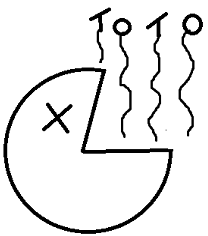

Totoz Collection !
Back

✓ lower half of superior vena cava
✓ terminal part of azygos vein
✓ right and left pulmonary veins
Gross Mediastinum, taught by the madam
The Mediastinum is bounded anteriorly, posteriorly and laterally by what ?
✓ anteriorly → Sternum
✓ Posteriorly → Thoracic Vertebral Column (T1-T12)
✓ on each side → Mediastinal Pleura
✓ Posteriorly → Thoracic Vertebral Column (T1-T12)
✓ on each side → Mediastinal Pleura
The Mediastinum extends vertically from ........... to ................ and on each side it is bounded
✓ from the superior thoracic aperture to the diaphragm
What are the things that are contained in the mediastinum
✓ remains of the thymus
✓ Heart & large blood vessels
✓ Trachea & esophagus
✓ Thoriacic Duct & Lymph Nodes
✓ Vagus & Phrenic Nerve
✓ Sympathetic Trunks
✓ Heart & large blood vessels
✓ Trachea & esophagus
✓ Thoriacic Duct & Lymph Nodes
✓ Vagus & Phrenic Nerve
✓ Sympathetic Trunks
The Mediastinum has two divsions, namely..
✓ superior mediastina
✓ inferior mediastina
✓ inferior mediastina
What makes the division mentioned above and what is its range ?
✓ An imaginary horizonal plane
✓ Range → It passes from the sternal angle anteriorly to the lower border of the body of T4 posteriorly
✓ Range → It passes from the sternal angle anteriorly to the lower border of the body of T4 posteriorly
What are the subdivisions of the superior mediastina
✓ Ha !! this one doesnt have subdivisions
What are the subdivisions of the inferior mediastina
✓ Middle mediastinum
✓ Anterior mediastinum
✓ Posterior mediastinum
✓ Anterior mediastinum
✓ Posterior mediastinum
What is the boundary of the Superior Mediastina anteriorly, posteriorly, superiorly, inferiorly and laterally ?
✓ Superiorly → Plane of superior thoracic apaerture
✓ Inferiorly → An imaginary plane
✓ Anteriorly → Manubrium Sterni
✓ Posteriorly → Thoracic vertebal T1-T4
✓ laterally → On each side Mediastinal pleura
✓ Inferiorly → An imaginary plane
✓ Anteriorly → Manubrium Sterni
✓ Posteriorly → Thoracic vertebal T1-T4
✓ laterally → On each side Mediastinal pleura
List the contents of the superior Mediastina
✓ Esophagus
✓ Trachea
✓ Arch of aorta & its 3 branches: brachiocephalic, left common carotid & left subclavian arteries
✓ Right & left brachiocephalic veins & superior vena cava
✓ Thymus gland
✓ Trachea
✓ Arch of aorta & its 3 branches: brachiocephalic, left common carotid & left subclavian arteries
✓ Right & left brachiocephalic veins & superior vena cava
✓ Thymus gland
What nerves are found in the superior mediastinum
✓ Right and Left Vagus Nerve
✓ Right and Left Phrenic nerve
✓ Right and Left sympathetic Trunks
✓ Left recurrent Laryngeal nerve
✓ Right and Left Phrenic nerve
✓ Right and Left sympathetic Trunks
✓ Left recurrent Laryngeal nerve
How about the Lymphatic structures, which do you find in the Superior Mediastinum
✓ Thoracic duct
✓ Lymph nodes
✓ Lymph nodes
List down the muscles that you wil find in the Superior Mediastinum
✓ Sternothyroid
✓ Sternohyoid
✓ Longus Colli
✓ Sternohyoid
✓ Longus Colli
One of the subdivisions of the inferior mediastinum is the Anterior mediastinum, describe its boundaries.
✓ Anteriorly → Body of Sternum
✓ Posteriorly → pericardium
✓ Superiorly → imaginary plane / Superior Mediastinum
✓ Inferiorly → superior surface of diaphragm
✓ laterally → Mediastinal pleura
✓ Posteriorly → pericardium
✓ Superiorly → imaginary plane / Superior Mediastinum
✓ Inferiorly → superior surface of diaphragm
✓ laterally → Mediastinal pleura
Outline The contents of the Anterior Mediastinum
✓ Superior & inferior Sternopericardial ligaments
✓ Lymph nodes with lymphatics
✓ Small mediastinal branches of the internal thoracic artery
✓ lowest part of the thymus in children
✓ Areolar tissue
✓ Lymph nodes with lymphatics
✓ Small mediastinal branches of the internal thoracic artery
✓ lowest part of the thymus in children
✓ Areolar tissue
After the Anterior mediastinum we have the middle mediastinum, what is its boundary
✓ Anteriorly → Anterior Mediastinum
✓ Posteriorly → Posterior Mediastinum
✓ Superiorly → imaginary plane / Superior Mediastinum
✓ Inferiorly → diaphragm
✓ laterally → Mediastinal pleura
✓ Posteriorly → Posterior Mediastinum
✓ Superiorly → imaginary plane / Superior Mediastinum
✓ Inferiorly → diaphragm
✓ laterally → Mediastinal pleura
Which organ(s) is found in the middle Mediastinum
✓ Heart enclosed in pericardium
What arteries are found in the Middle Mediastinum
✓ ascending aorta
✓ pulmonary trunk dividing into 2 pulmonary arteries
✓ Pericardiophrenic arteries
✓ pulmonary trunk dividing into 2 pulmonary arteries
✓ Pericardiophrenic arteries
What nerves are found in the Middle Mediastinum
✓ phrenic nerve
✓ deep cardiac plexus
✓ deep cardiac plexus
What Veins are found in the Middle Mediastinum
✓ lower half of superior vena cava
✓ terminal part of azygos vein
✓ right and left pulmonary veins
What Lymph nodes are found in the Middle Mediastinum
✓ Tracheobronchial nodes
What Tubes are found in the Middle Mediastinum
✓ Bifurcation of trachea
✓ right & left principal bronchi
✓ right & left principal bronchi
Lastly you have the Posterior Mediastinum, what structures is it bounded by
✓ Anteriorly → Pericardium, posterior part of the upper surface of diaphragm, bifurcation of trachea & pulmonary vessels
✓ Posteriorly → T5-T12 & intervening discs
✓ Superiorly → imaginary or horizontal plane / Superior Mediastinum
✓ Inferiorly → diaphragm
✓ laterally → Mediastinal pleura
✓ Posteriorly → T5-T12 & intervening discs
✓ Superiorly → imaginary or horizontal plane / Superior Mediastinum
✓ Inferiorly → diaphragm
✓ laterally → Mediastinal pleura
What organ/tube is in the posterior mediastinum
✓ Oesophagus (most anterior structure)
What Artery is in the posterior mediastinum
✓ Descending thoracic aorta
What vein are in the posterior mediastinum
✓ Azygos vein
✓ hemiazygos & accessory hemiazygos
✓ hemiazygos & accessory hemiazygos
What nerve supply is in the posterior mediastinum
✓ Right & left vagus
✓ splanchnic nerves, greater, lesser & least, arising from the lower 8 thoracic ganglia of the sympathetic chain
✓ splanchnic nerves, greater, lesser & least, arising from the lower 8 thoracic ganglia of the sympathetic chain
What Lymph structures are in the posterior mediastinum
✓ posterior mediastinal lymph nodes lying along side the aorta
✓ Thoracic duct
✓ Thoracic duct
What is Mediastinitis
✓ This is inflammation of the mediastinum
What causes mediastinal syndrome and what is the primary characteristic of this condition ?
✓ cause → abnormal growth such as a tumor
✓ features of the condition → compression of mediastinal structures
✓ features of the condition → compression of mediastinal structures
What fascia extends into the superior mediastinum and attaches to T4
✓ The Prevertebral layer of deep cervical fascia
Infecton present in the neck behind the Prevertebral fascia can spread to which part of the mediastinum
✓ superior mediastinum only
Why can't infections of the Prevertebral layer spread below the superior mediastinum
✓ The Prevertebral fascia is only attached to T4, limiting infection spread below the superior mediastinum
Which fascia bends with the arch of the aorta in the superior mediastinum
✓ The pretracheal fascia
Where do neck infections in between the pretracheal and Prevertebral fascia spread ?
✓ The infection spreads into the superior mediastinum and then through the posterior mediastinum, and eventually cause Mediastinitis
How can neck infections cause
✓ The pretracheal fascia